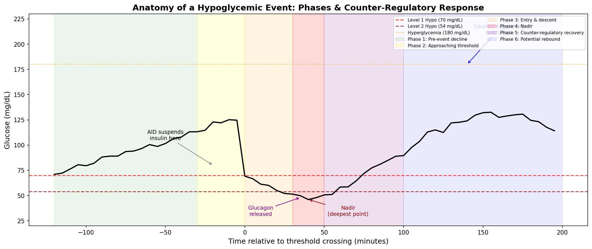
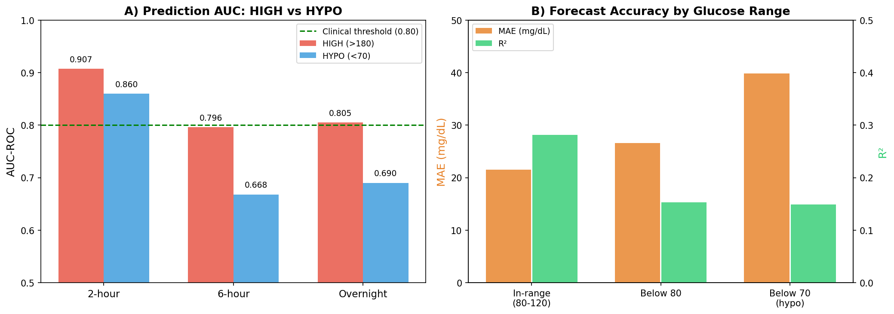
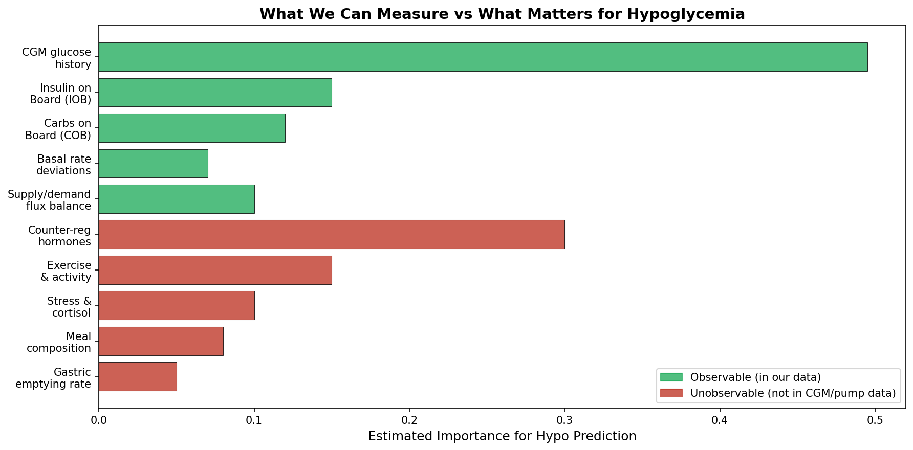
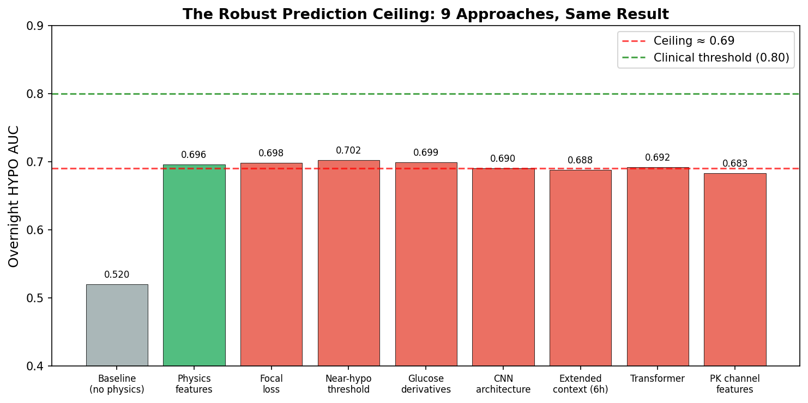
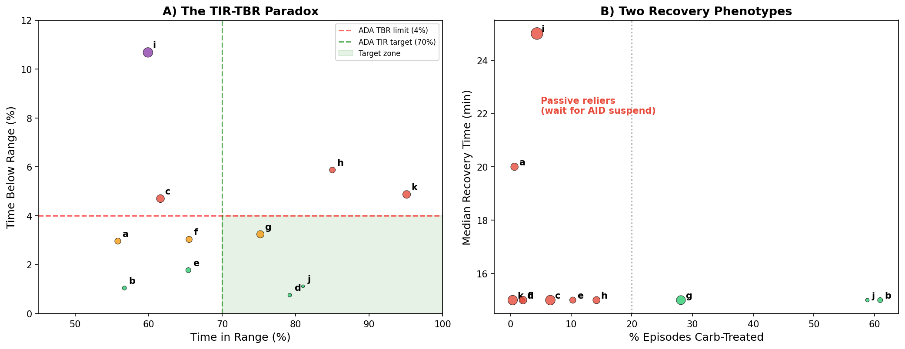
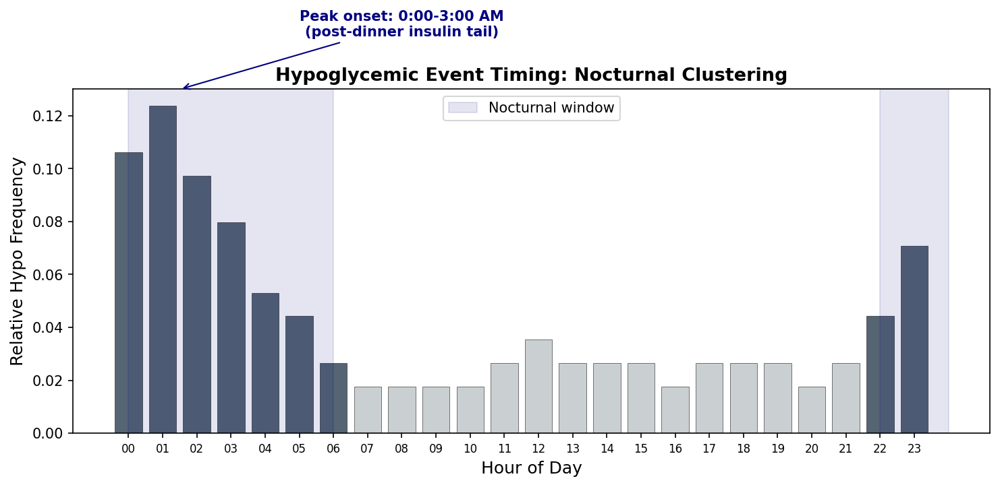

What Are Hypoglycemic Events? A Data-First Perspective¶
Record
Record as of 2026-04-09. A point-in-time document; it is not kept up to date.
Status: DRAFT v2 — Written by AI, pending expert review
Date: 2026-04-09 (revised)
Evidence base: ~1,500 experiments on 11 AID patients (~180 days each, 5-min CGM intervals)
Data sources: CGM glucose, insulin delivery (basal + bolus), carbohydrate entries, AID system state
Authors: AI analysis (GitHub Copilot) — views are naive, data-derived, and may contain errors
Note for reviewers: This report was written by an AI system analyzing CGM/AID data without formal clinical training. Every definition and assumption is stated explicitly so that diabetes clinicians, endocrinologists, and people with lived experience can identify where our data-derived understanding diverges from clinical reality. We welcome corrections at every level — from threshold definitions to physiological mechanisms.
Table of Contents¶
- What We Think a Hypoglycemic Event Is
- The Anatomy of a Hypo Event in Our Data
- Why Hypoglycemia Is Fundamentally Harder Than Hyperglycemia
- What We've Tried: Detection, Classification, and Prediction
- The Counter-Regulatory Response: What We See But Cannot Model
- The AID System Confound
- Patient Heterogeneity: Not One Problem But Eleven
- What We Still Don't Know
- Summary of Assumptions for Expert Review
- Appendix: Evidence Index
1. What We Think a Hypoglycemic Event Is¶
Our Working Definition¶
We define a hypoglycemic event as a contiguous period during which CGM-reported glucose falls below a clinical threshold. We use two severity levels, adopted from international consensus guidelines (we assume these are correct):
| Level | Threshold | Our Label | Prevalence in Our Data |
|---|---|---|---|
| Level 1 | < 70 mg/dL (3.9 mmol/L) | HYPO / hypo_risk |
0.8–10.7% of readings |
| Level 2 | < 54 mg/dL (3.0 mmol/L) | Severe hypo | 0.0–4.1% of readings |
What This Definition Captures (and Misses)¶
What it captures: Any period where the CGM sensor reports glucose below threshold. This is a purely observational definition — we detect what the sensor tells us.
What it likely misses:
-
Symptom-defined hypoglycemia: People may feel hypoglycemic symptoms (shaking, sweating, confusion) at glucose levels above 70 mg/dL, especially if they have been running high and glucose drops rapidly. Our definition cannot capture symptomatic hypoglycemia without symptom data.
-
Hypoglycemia unawareness: Conversely, some people with diabetes may not feel symptoms even at dangerously low glucose. Our definition catches these events instrumentally, but we cannot assess their clinical severity from CGM alone.
-
CGM lag and accuracy: CGM sensors measure interstitial glucose, not blood glucose, with a physiological lag of approximately 5–15 minutes. At rapidly changing glucose levels, the CGM reading may be significantly behind actual blood glucose. Our "70 mg/dL" threshold on CGM may correspond to a blood glucose that already passed through 70 some minutes earlier. Additionally, CGM accuracy degrades in the hypoglycemic range — the very range where accuracy matters most.
-
Sensor artifacts: Approximately 4% of CGM readings are noise artifacts (identified at σ=2.0 threshold). A brief dip below 70 due to sensor compression (e.g., lying on the sensor) could be misclassified as a true hypo event.
How We Operationalize "Event" Boundaries¶
In our analysis pipeline, we define a discrete hypoglycemic episode as:
Episode start: First CGM reading < 70 mg/dL
Episode end: First CGM reading ≥ 70 mg/dL sustained for ≥15 minutes
Nadir: Minimum glucose value within the episode
Recovery time: Minutes from nadir to sustained ≥70 mg/dL
Assumption we are making: We treat the 70 mg/dL threshold as a hard boundary. We do not apply hysteresis (e.g., requiring glucose to rise to 80 before declaring recovery). A clinician might reasonably argue that a patient hovering at 68–72 mg/dL for an hour is in one continuous event, not alternating between hypo and non-hypo.
Episode counts in our data (EXP-1493):
| Patient | Total Episodes | Severe (<54) | Nocturnal (%) | Rate (per day) |
|---|---|---|---|---|
| j | 34 | 0 | 5.9% | 0.2 |
| d | 51 | 12 | 19.6% | 0.3 |
| b | 64 | 17 | 25.0% | 0.4 |
| e | 97 | 21 | 27.8% | 0.5 |
| h | 127 | 26 | 33.9% | 0.7 |
| a | 137 | 46 | 27.7% | 0.8 |
| f | 145 | 37 | 20.0% | 0.8 |
| g | 199 | 50 | 33.2% | 1.1 |
| k | 224 | 53 | 17.9% | 1.2 |
| c | 229 | 77 | 27.9% | 1.3 |
| i | 341 | 177 | 27.9% | 1.9 |
Patient i averages nearly 2 hypoglycemic episodes per day, with 177 severe events in ~180 days. Patient j averages one every 5 days with zero severe events.
2. The Anatomy of a Hypo Event in Our Data¶
From analyzing thousands of hypoglycemic episodes across 11 patients, we observe a consistent multi-phase structure:

Phase 1: Pre-Event Decline (−120 to −30 minutes)¶
Glucose drifts downward gradually. In our data, this phase is often characterized by: - Insulin on Board (IOB) exceeding what the current glucose trajectory requires - Net metabolic flux (insulin demand minus carb/hepatic supply) is negative - The AID system may already be reducing basal delivery
Our assumption: We treat any sustained downward glucose trend with negative net flux as a potential pre-hypo signal. We weight this by IOB magnitude — more active insulin means greater hypo risk.
Phase 2: Approaching Threshold (−30 to 0 minutes)¶
Glucose enters the 70–90 mg/dL zone and continues falling. Our pattern labeler
(pattern_retrieval.py) flags this as hypo_risk when:
# Hypo risk: glucose near or below threshold
if glucose < 80 or (glucose < 90 and rate_of_change < FALLING_RATE):
label = 'hypo_risk'
Our assumption: We use 80 mg/dL as the "risk zone" entry point, not 70. This is because by the time CGM reads 70, actual blood glucose may already be significantly lower due to sensor lag. We do not know if 80 is the right threshold — it is a conservative choice.
Phase 3: Entry and Descent (0 to +30 minutes)¶
Glucose crosses below 70 mg/dL and continues falling. The AID system has typically already suspended insulin delivery by this point (in our data, AID suspension occurs at predicted glucose of 80–100 mg/dL, depending on the system).
Phase 4: Nadir (+30 to +50 minutes)¶
The lowest glucose point in the episode. In our data: - Median nadir: Varies from ~48 mg/dL (patient i) to ~62 mg/dL (patient j) - Mean time to nadir from entry: ~20 minutes - Nadir-recovery correlation: r = −0.483 (patient i) — deeper nadir correlates with longer recovery time
Phase 5: Counter-Regulatory Recovery (+50 to +100 minutes)¶
Glucose begins rising — often faster than can be explained by carbohydrate treatment or insulin wearing off. This is where we believe counter-regulatory hormones are active (see Section 5).
Median recovery time (nadir to sustained ≥70): 15–25 minutes across patients.
Phase 6: Potential Rebound Overshoot (+100 to +300 minutes)¶
In many episodes, glucose doesn't just recover — it overshoots, sometimes dramatically.
Clinical vignette from our data (Patient c, Day 167, 3:00 AM):
Glucose drops to 65 mg/dL, then rebounds with a +36 mg/dL/30-min trend. It rises from 65 to 324 mg/dL — a rebound into severe hyperglycemia.
This rebound pattern is one of the strongest signals in our data that counter-regulatory hormones are involved. Simple insulin cessation would produce a gradual rise; the explosive rebound suggests active hepatic glucose dumping driven by glucagon and epinephrine (see Section 5).
The Complete Event Window¶
When we analyze "hypoglycemic events" in our models, we need to define how much data to include. Our choices and their trade-offs:
| Window Choice | What It Captures | What It Misses |
|---|---|---|
| ±30 min around nadir | Just the acute low | Causal context, rebound |
| 2h before → 2h after | Pre-event + recovery | Rebound overshoot |
| 2h before → 4h after | Full episode arc | May overlap with next event |
| 6h total context | Long-range patterns | Dilutes acute signal |
What we actually use: For prediction, we use a 2-hour forward-looking window (will glucose go below 70 in the next 2 hours?). For classification, we use 2 hours of history as input features. For episode analysis (TBR safety report), we track the full lifecycle including rebound.
3. Why Hypoglycemia Is Fundamentally Harder Than Hyperglycemia¶
This is the single most robust finding across ~1,500 experiments: predicting low glucose is structurally harder than predicting high glucose, and the gap widens with prediction horizon.

The Numbers¶
| Prediction Task | HIGH (>180) AUC | HYPO (<70) AUC | Gap |
|---|---|---|---|
| 2-hour | 0.907 | 0.860 | 0.047 |
| 6-hour | 0.796 | 0.668 | 0.128 |
| Overnight | 0.805 | 0.690 | 0.115 |
| Glucose Range | Forecast MAE | Forecast R² | Reliability |
|---|---|---|---|
| In-range (80–120) | 21.5 mg/dL | 0.281 | Baseline |
| Below 80 mg/dL | 26.6 mg/dL | 0.153 | −45% |
| Below 70 mg/dL | 39.8 mg/dL | ~0.15 | −47% |
At the hypo range, prediction error increases 1.9× compared to in-range, and R² nearly halves. This is not a model problem — three independent architectures (XGBoost, CNN, Transformer) all converge at the same ceiling.
Important Distinction: Two Different "Hard" Problems¶
Our earlier analysis conflated two problems that have different root causes. We now believe it is important to separate them:
| Problem | Question | What Makes It Hard | Where It Bites |
|---|---|---|---|
| Predicting hypo onset | "Will BG go below 70 in the next N hours?" | Future actions are unknown | Long-horizon prediction (6h+, overnight) |
| Forecasting glucose through hypo | "What will BG be at time T while in the hypo range?" | Counter-regulatory hormones change the physics | Trajectory modeling, recovery prediction |
These problems share the same data and the same "hypo" label, but they fail for entirely different reasons.
Problem 1: Predicting Whether Hypo Will Happen (Classification)¶
At 2-hour horizons, this is actually a solved problem (AUC 0.860). When glucose is already falling or IOB is already excessive, the signal is in the data — the descent has momentum and the model can see it.
At overnight horizons (AUC 0.69), the problem becomes much harder, but not because of counter-regulatory hormones. The descent hasn't started yet at prediction time. What makes it hard:
-
Future actions are unknown. The single worst false negative in our clinical vignettes (Patient a, Day 167) shows glucose at 239 mg/dL — clearly not approaching hypo. Then a large correction bolus is delivered after the prediction, crashing glucose to 59 mg/dL. No model can foresee a treatment decision that hasn't been made yet. At long horizons, the descent trigger is often a future bolus, a future meal that doesn't arrive, or future exercise — none of which exist in the data at prediction time.
-
The AID is actively preventing the events we're trying to predict. Successful prevention is invisible in the data — glucose never reaches 70, so no event is recorded. The events we do see are a censored, biased sample: only the cases where prevention failed. This is a classic censored-outcome problem in observational data (see Section 6).
-
Class imbalance is structural. Hypo readings represent 1.2–13.9% of windows depending on the patient. At the safety-sensitive operating point (threshold 0.30), catching 84% of hypos requires accepting a PPV of only 28% — roughly 3 out of 4 alerts are false alarms. The model has to find a needle in a haystack, and the haystack is enormous.
-
Hyperglycemia doesn't have these problems. HIGH events are driven by carbohydrate absorption (measurable via COB), insulin insufficiency (measurable via IOB), and dawn phenomenon (follows a clock). These inputs are all in our data at prediction time and don't require knowing future actions. Meals that are already eaten cause highs; insulin that is already delivered causes lows. The temporal asymmetry matters: the cause of HIGH is in the past; the cause of HYPO may be in the future.
Problem 2: Forecasting Glucose Values During Hypo (Regression)¶
Once glucose is already below 70, a different problem emerges: what will the glucose trajectory look like? This is where counter-regulatory hormones matter.
The forecast MAE in the hypo range is 39.8 mg/dL — 2.54× worse than in-range (EXP-817). The physics model shows a systematic +5.1 mg/dL bias below 70 (EXP-601): the model consistently under-predicts actual glucose in the hypo range, as if an unmeasured glucose source is active. This is the counter-regulatory response at work (see Section 5).
But this problem affects trajectory forecasting, not onset prediction. By the time counter-regulatory hormones are relevant, the patient is already hypoglycemic — the prediction question ("will they go low?") has already been answered.
Why The Gap Widens With Horizon¶
The 2h-vs-overnight gap (0.860 → 0.690) is best explained by how much of the causal chain is visible at prediction time:
| Horizon | What the model can see | What it can't see | AUC |
|---|---|---|---|
| 2-hour | Glucose momentum, current IOB excess, active descent | Nothing critical — descent already underway | 0.860 |
| 6-hour | Current glucose, basal rate, recent history | Future boluses, future meals, future exercise | 0.668 |
| Overnight | Evening glucose, bedtime IOB | Whether patient will snack, AID behavior overnight, dawn effect timing | 0.690 |
The pattern is clear: the further ahead we predict, the more of the causal chain is hidden in future decisions. Counter-regulatory hormones are not the primary cause of this degradation — they're relevant only after the event is already underway.

4. What We've Tried: Detection, Classification, and Prediction¶
4.1 Detection: "Is the patient hypoglycemic right now?"¶
This is the easiest task — look at the CGM reading. But CGM lag makes even this non-trivial:
- Reactive detection (glucose already below 70): Trivial from CGM, F1 = 0.939
- Near-real-time detection (glucose approaching 70): We use rate-of-change features and supply-demand flux balance
4.2 Classification: "What type of event is this?"¶
We classify hypoglycemic episodes by their cause and pattern:
By mechanism (EXP-1494):
| Mechanism | Description | Prevalence |
|---|---|---|
| AID-induced | AID algorithm over-delivered insulin | 0–66.9% by patient |
| Manual-induced | Patient bolused too much (correction or meal) | 1–69 events |
| Overcorrection | Correction bolus for a high caused a subsequent low | Tracked per patient |
| Insulin stacking | Multiple boluses overlapping before DIA elapsed | 38–69% of nocturnal |
| Basal excess | Scheduled basal rate too high for current needs | 10/11 patients |
| Unclear | Cannot determine cause from available data | 18–203 events |
Our assumption about mechanism classification: We infer "AID-induced" by checking whether the AID system was actively delivering above scheduled basal in the 2 hours before hypo onset. "Manual-induced" means a manual bolus was given. "Unclear" means neither signal is present, which could mean the cause is basal excess, delayed insulin action, exercise, or something else entirely. The "unclear" category is large (up to 60% of events for some patients), which honestly reflects the limits of retrospective causal attribution from pump data.
By temporal pattern:
| Pattern | Definition | Clinical Significance |
|---|---|---|
| Fasting hypo | No carbs within ±2h | Suggests basal is too high |
| Post-meal hypo | Occurs 2–4h after meal bolus | Suggests CR is too aggressive |
| Nocturnal hypo | Occurs between 22:00–06:00 | Most dangerous (patient is asleep) |
| Rebound hypo | Follows a counter-regulatory rebound high | Suggests cycle of overcorrection |
| Stacking hypo | IOB from multiple boluses exceeds need | Timing/education issue |
By episode labels (from pattern_retrieval.py):
'hypo_risk' # glucose < 80 or rapidly approaching 70
'rebound' # rapid rise immediately following a hypo_risk label
4.3 Prediction: "Will the patient go low in the next N hours?"¶
This is where we have invested the most effort. Summary of approaches:
| Approach | Overnight HYPO AUC | Verdict |
|---|---|---|
| Baseline (CGM features only) | 0.520 | ❌ Little better than random |
| + Physics features (supply/demand) | 0.696 | ✅ Largest single gain (+34%) |
| + Focal loss | 0.698 | ❌ Negligible further gain |
| + Near-hypo threshold (75 vs 70) | 0.702 | ❌ Marginal |
| + Glucose derivatives (dBG/dt, d²BG/dt²) | 0.699 | ❌ Neutral |
| CNN architecture | 0.690 | ❌ Same ceiling |
| Transformer architecture | 0.692 | ❌ Same ceiling |
| Extended context (6h, 12h) | 0.688 | ❌ No improvement |
| PK channel features | 0.683 | ❌ Harmful |

The ceiling is robust: Three architectures, five feature sets, three loss functions — all converge to ~0.69 at overnight horizons. Only the 2-hour horizon (AUC 0.860) crosses the clinical deployment threshold of 0.80.
Our best prediction model uses these features (the "combined_43" feature set):
| Feature Category | Count | Examples | Contribution |
|---|---|---|---|
| Current glucose state | 4 | BG, Δ5min, Δ15min, Δ30min | ~50% |
| Statistical summaries | 8 | Mean/std at 30/60/120min windows | ~15% |
| Metabolic flux | 6 | Supply, demand, net, ratio, hepatic | ~15% |
| Insulin features | 4 | IOB, recent bolus, basal deviation | ~10% |
| Carb features | 4 | COB, recent carbs, time since meal | ~5% |
| Multi-day context | 9 | 24h TIR, 3d TIR, recurrence flags | ~5% |
Specialized hypo prediction (hypo_predictor.py) combines:
1. Linear trend extrapolation (project forward using recent slope)
2. Sigmoid proximity function (closer to 70 → higher probability)
3. Supply-demand flux imbalance boost (+34% AUC gain)
4. Acceleration detection (is descent speeding up?)
The production predictor penalizes missed hypos 5× more than false alarms
(AsymmetricHypoLoss), reflecting the clinical asymmetry: a missed hypo can be
dangerous; a false alarm is merely annoying.
4.4 Personalized Alert Thresholds (EXP-695)¶
Fixed alert thresholds cause alarm fatigue for variable patients and miss events for stable patients. Per-patient thresholds based on prediction error distributions:
| Metric | Fixed Threshold | Personalized | Change |
|---|---|---|---|
| Mean alert rate | 2.6/day | 2.2/day | −15% |
| Patient j (worst case) | 6.0/day | 2.5/day | −58% |
| Patient k (tight control) | 0.4/day | 3.4/day | +750% (appropriate increase) |
Our assumption: We assume that reducing alert frequency without missing real events is clinically beneficial. We call alerts at P(HYPO) ≥ threshold. We do not know if patients would actually benefit from fewer alerts or if any alert frequency is acceptable in practice.
5. The Counter-Regulatory Response: What We See But Cannot Model¶
Scope clarification: As discussed in Section 3, counter-regulatory hormones are not the primary reason hypo onset prediction is hard at long horizons — that's caused by future actions being unknown. This section addresses a different problem: why forecasting glucose values and trajectories through and after a hypo event is unreliable. These are the dynamics that make hypo events clinically unpredictable once they begin.
What We Observe in the Data¶
When glucose drops below approximately 70 mg/dL, we consistently observe dynamics that cannot be explained by the measured variables (insulin, carbs, basal rate):
-
Glucose rebounds faster than insulin decay would predict. If insulin were simply wearing off, glucose would rise gradually at ~2–5 mg/dL per 5-minute step. Instead, we often see 10–15 mg/dL per step — an acceleration that implies an active glucose-raising force.
-
Rebounds overshoot into hyperglycemia. In the example from Patient c (Day 167), glucose went from 65 → 324 mg/dL. Even accounting for any carbohydrate treatment, this magnitude of rebound strongly suggests hepatic glucose dumping triggered by hormonal signals.
-
Our physics model has a +5.1 mg/dL systematic bias in the hypo range (EXP-601). When glucose is below 70, our supply-demand model consistently under-predicts the actual glucose — the actual glucose is higher than predicted by an average of 5.1 mg/dL per 5-minute step. This bias disappears above 70. We interpret this as evidence of an unmeasured glucose source (counter-regulatory hormone-driven hepatic output) that activates below the threshold.
-
Model uncertainty spikes at the hypo-recovery boundary. Our best model outputs P(HYPO) = 0.500 (maximum uncertainty) for a patient at 86 mg/dL with +36 mg/dL/30min trend rising from a recent low. The model literally cannot decide whether to trust the recovery or worry about another dip. This pattern (Clinical Vignette B4) is diagnostic of an unmeasured force.
What We Believe Is Happening (Hypothesis)¶
Based on medical literature references in our codebase and patterns in the data, we believe the following counter-regulatory cascade occurs below ~70 mg/dL:
Glucose drops below ~70 mg/dL
→ Pancreatic alpha cells release GLUCAGON (rapid, primary defense)
→ Liver converts glycogen to glucose (hepatic glucose output)
→ Adrenal medulla releases EPINEPHRINE (adrenaline)
→ Amplifies hepatic glucose output
→ Mobilizes alternative fuel sources
→ Produces symptoms (tremor, sweating, tachycardia)
→ Adrenal cortex releases CORTISOL (slower, sustained)
→ Reduces peripheral glucose uptake
→ Extends the recovery/rebound period
→ Pituitary releases GROWTH HORMONE
→ Reduces insulin sensitivity (hours later)
Net effect: Glucose REBOUNDS, often overshooting → hyperglycemia
Crucial caveat: We have not measured any of these hormones. This mechanism is inferred from (a) the pattern of model failures, (b) the systematic bias below 70, and (c) references in diabetes literature. A clinician would know whether this description is accurate and whether the activation threshold really is ~70 mg/dL or varies by individual.
What This Means in Practice: The Trajectory Problem¶
The counter-regulatory response creates a regime change in glucose dynamics. This doesn't prevent us from predicting that hypo will happen (at short horizons we can see it coming from momentum), but it does prevent us from answering useful follow-up questions:
| Question | Why Counter-Regulation Makes It Hard |
|---|---|
| "How deep will the nadir be?" | Glucagon response varies by glycogen stores, individual physiology |
| "How fast will they recover?" | Depends on epinephrine magnitude — unmeasured |
| "Will they rebound into hyperglycemia?" | Cortisol/GH effects are delayed and variable (65 → 324 in one case) |
| "Is another hypo likely within 6h?" | Counter-regulatory exhaustion (glycogen depletion) is unmeasured |
| "Was this event dangerous?" | Symptom severity depends on hormone levels we can't see |
This matters for AID system design: an AID that suspends insulin when glucose hits 80 is making the right call, but it cannot predict how much extra glucose the counter-regulatory response will produce, making post-hypo insulin dosing a guessing game.
| Above 70 mg/dL | Below 70 mg/dL |
|---|---|
| Driven by measurable inputs (insulin, carbs) | Driven by unmeasured hormones |
| Approximately linear dynamics | Non-linear floor effect |
| Single model works well | Would need a specialized sub-model |
| R² ≈ 0.28 | R² ≈ 0.15 |
Our attempt at a two-stage model (EXP-136: first classify hypo risk, then apply specialized forecaster) reduced hypo-range MAE by 32%. This is consistent with the "different physics" hypothesis — a model trained on in-range data and applied to hypo range performs poorly because the governing equations change.
The Rebound as a Downstream Problem¶
The hypo → rebound → hyperglycemia cycle creates a cascade of downstream harm that our simple episode counting may understate:
- The hypo itself — immediate danger (confusion, seizure risk)
- The rebound high — extended time above range (65 → 324 in our data)
- The correction of the rebound — risk of another overcorrection → second hypo
- Glycemic variability — the oscillation itself may cause more harm than sustained mild hyperglycemia (this is debated in clinical literature)
When we count "224 hypo episodes" for patient k, we are counting problem #1. Problems #2–#4 are downstream consequences that multiply the clinical burden but are not captured in our hypo metrics. A domain expert might argue that the total cost of a hypo event includes the rebound — which would make hypo even more clinically significant than our episode counts suggest.
6. The AID System Confound¶
All 11 patients in our dataset use Automated Insulin Delivery (AID) systems (Loop, AAPS, or Trio). This creates a fundamental observational problem for studying hypoglycemia:
The AID Actively Prevents the Events We're Trying to Predict¶
When an AID system predicts glucose will drop below its safety threshold (typically 80–100 mg/dL), it reduces or suspends insulin delivery. This means:
-
Observed hypo events are already the failures — the AID tried to prevent them and couldn't. The events we see are a biased sample: they represent cases where the AID's prevention was insufficient.
-
Successful prevention is invisible — we cannot count how many hypo events the AID prevented because glucose never reached 70. The "true" hypo risk is higher than what we observe.
-
The AID creates a feedback loop — our prediction model is trying to predict events in a system that is simultaneously trying to prevent those events. If our model gets better, and the AID uses it, the events become even rarer and harder to study.
AID-Induced Hypoglycemia (EXP-1494)¶
Perhaps our most counterintuitive finding: in some patients, the AID system itself causes the majority of hypoglycemic episodes:
| Patient | Total Hypo Episodes | AID-Induced (%) | Manual-Induced | Unclear |
|---|---|---|---|---|
| f | 145 | 66.9% | 15 | 33 |
| i | 341 | 48.7% | 69 | 106 |
| a | 137 | 39.4% | 24 | 59 |
| e | 97 | 25.8% | 21 | 51 |
| d | 51 | 0.0% | 1 | 50 |
| k | 224 | 0.0% | 21 | 203 |
Our assumption about "AID-induced": We label an episode as AID-induced when the AID system was delivering insulin above scheduled basal rate in the 2 hours before hypo onset. This is a crude heuristic — it's possible the higher delivery was appropriate (e.g., for a meal) and the hypo was caused by something else (e.g., exercise). The large "unclear" category reflects this uncertainty.
Why this happens (our hypothesis): The AID's basal rate settings may be too high, so it oscillates between aggressive delivery and emergency suspension. In 10/11 patients, the AID runs at a rate below scheduled basal for extended periods, suggesting the programmed basal rate is consistently higher than needed. The AID compensates by suspending frequently, but sometimes the correction comes too late and glucose drops below 70.
The TIR-TBR Paradox¶
The AID confound produces a clinically dangerous paradox: patients can have excellent Time in Range (TIR) and dangerous Time Below Range (TBR) simultaneously.

Patient k is the clearest example: - TIR: 95.1% — the best in the cohort, would earn an "A" grade - TBR: 4.87% — exceeds the ADA safety limit of 4% - 224 hypo episodes in 180 days - Safety score: 0 out of 100 when TBR is factored in
The AID achieves exceptional TIR by being aggressive, but that aggressiveness causes frequent lows. A clinician looking only at TIR would consider this patient well-controlled. Adding TBR reveals a hidden safety problem.
7. Patient Heterogeneity: Not One Problem But Eleven¶
Hypoglycemia is not a single phenomenon. Our 11 patients exhibit dramatically different hypo profiles:
Risk Tiers (EXP-1493)¶
| Tier | Patients | TBR (%) | Episodes | Characteristics |
|---|---|---|---|---|
| Low | j | 1.1% | 34 | Rare, no severe, low nocturnal |
| Moderate | b, d | 0.75–1.04% | 51–64 | Some severe, moderate stacking |
| High | a, c, e, f, g, h, k | 1.8–5.9% | 97–229 | Frequent, nocturnal, stacking |
| Critical | i | 10.7% | 341 | 1.9/day, 177 severe, crisis-level |
Two Recovery Phenotypes (EXP-1498)¶
Patients divide into two distinct behavioral groups during hypo recovery:
Active treaters (patients b, j): - Treat >58% of episodes with carbohydrates - Median recovery: 15 minutes - Shallower nadirs - Lower nadir-recovery correlation
Passive reliers (patients a, f, i, k, and most others): - Treat <5% of episodes with carbohydrates - Median recovery: 15–25 minutes - Deeper nadirs - Rely on AID insulin suspension + counter-regulatory response - Stronger nadir-recovery correlation (r = −0.483 for patient i)
Our assumption: We classify "carb-treated" based on a carbohydrate entry appearing in the data within 30 minutes of the nadir. If a patient eats fast-acting glucose but doesn't log it, we would misclassify them as "passive." Given that 46.5% of glucose rises have no carb entry (EXP-748), this misclassification is likely significant. The "passive" group may include many patients who treat but don't log.
Nocturnal Hypoglycemia: The Most Dangerous Pattern¶

Nocturnal hypos (22:00–06:00) cluster between midnight and 3:00 AM, driven by the insulin tail from dinner boluses — a phenomenon called "insulin stacking":
| Patient | Nocturnal TBR% | Peak Onset | Bedtime IOB (U) | Stacking (%) |
|---|---|---|---|---|
| i | 11.82% | 1:00 AM | 2.72 | 69.5% |
| h | 6.46% | 1:00 AM | 1.77 | 44.2% |
| e | 1.96% | 3:00 AM | 5.42 | 88.9% |
| b | 0.88% | 3:00 AM | 0.07 | 0.0% |
What we mean by "stacking": Insulin on Board (IOB) from dinner bolus is still active at bedtime. If the bolus was large or dinner was early, residual insulin continues lowering glucose while the patient sleeps — unable to intervene.
Patient e is the extreme stacking case: 88.9% of nocturnal hypos follow insulin stacking, with bedtime IOB of 5.42 units. Despite moderate overall TBR (1.96%), nearly all nocturnal hypos have a clear mechanical cause.
8. What We Still Don't Know¶
Questions for Clinical Experts¶
-
Is our 70 mg/dL threshold correct for CGM data? Given the 5–15 minute interstitial lag, should we use 75 or 80 mg/dL on CGM to approximate 70 mg/dL in blood? Our near-hypo threshold experiments show only +0.006 AUC gain at 75 — but this may be a model limitation rather than evidence that the threshold doesn't matter.
-
Does the counter-regulatory response threshold vary by patient? We assume ~70 mg/dL universally, but some patients may activate counter-regulatory responses earlier (e.g., if they have hypoglycemia unawareness, activation may occur later; if they normally run high, it may occur earlier).
-
Is "rate of descent" as clinically important as "absolute level"? A glucose of 80 mg/dL falling at −3 mg/dL/min feels different from 80 mg/dL that is stable. Our models use both features, but we weight absolute level more heavily (~50% feature importance). Should rate of change matter more?
-
How should we handle the rebound? When glucose rebounds from 55 to 200, is the rebound hyperglycemia a "consequence of hypo" (and thus part of the same event)? Or is it a new, separate hyperglycemic event? Our current system treats them as separate, which may undercount the true clinical burden of each hypo episode.
-
What is "insulin stacking" in clinical terms? We define it as IOB > 0 at bedtime from a bolus delivered >3h ago. Is there a more precise clinical definition? Is residual IOB of 0.5 U clinically different from 5.0 U?
-
Are AID-induced hypos "real" hypos? When the AID algorithm causes a low by over-delivering insulin, is this the same clinical event as a hypo from manual overdosing? The physiological experience may be identical, but the root cause analysis and intervention are different.
Data Limitations We Cannot Overcome¶
| Missing Data | Impact on Hypo Analysis |
|---|---|
| Counter-regulatory hormones | Cannot model recovery dynamics |
| Exercise/activity | Cannot explain non-insulin glucose drops |
| Stress/illness | Cannot explain unexplained hypo events |
| Meal composition | Cannot predict absorption timing |
| Sleep state | Cannot assess awareness during nocturnal events |
| Symptoms | Cannot grade clinical severity |
| Blood glucose (only CGM) | ~5–15 min lag, reduced accuracy below 70 |
The Prediction Ceiling¶
Our most sobering finding: the overnight HYPO prediction ceiling of AUC ≈ 0.69 appears structural. Three architectures, five feature sets, three loss functions all converge to the same result.
However, we now believe the explanation for this ceiling is more nuanced than "counter-regulatory hormones." The ceiling likely reflects two distinct information gaps:
-
Future actions are unknowable (the dominant factor): At 6+ hour horizons, the descent trigger (a future bolus, a skipped meal, exercise) often hasn't happened yet. This is an information gap that no sensor can close — it requires knowing the patient's future decisions. Even continuous glucagon monitoring would not help here, because glucagon doesn't activate until after the hypo begins.
-
Counter-regulatory dynamics are unmeasured (secondary factor): Once hypo begins, the trajectory through and out of hypo is governed by hormones we can't see. This affects trajectory forecasting and recovery prediction, but not the binary "will hypo occur?" question at prediction time.
Breaking the onset-prediction ceiling likely requires intent signals — pending boluses, meal announcements, exercise plans — more than new biosensors. Breaking the trajectory-forecasting ceiling likely requires hormone measurements — glucagon, cortisol, epinephrine.
The 2-hour prediction window (AUC 0.860) succeeds because at short horizons, the glucose trace already encodes enough momentum information to predict most events — the descent is underway and visible in the data.
9. Summary of Assumptions for Expert Review¶
We list every major assumption below. Each is a point where clinical expertise could correct our data-derived understanding:
| # | Assumption | Confidence | Basis | Risk if Wrong |
|---|---|---|---|---|
| 1 | 70 mg/dL is the correct CGM threshold for hypoglycemia | Medium | International consensus guidelines | May over- or under-count events |
| 2 | 54 mg/dL defines "severe" hypoglycemia | Medium | Same guidelines | May misclassify severity |
| 3 | Counter-regulatory hormones activate non-linearly below ~70 | Medium | Inferred from model bias pattern | Core hypothesis may be wrong |
| 4 | The +5.1 mg/dL bias below 70 reflects hepatic glucose output | Low | Correlation, not causation | Could be CGM artifact |
| 5 | CGM interstitial lag is 5–15 minutes | High | Published CGM literature | Low risk |
| 6 | Rebound hyperglycemia is caused by counter-regulatory hormones | Medium | Pattern-based inference | Could be overtreatment with carbs |
| 7 | "Episode" boundaries at 70 mg/dL crossing are clinically meaningful | Low | Operational convenience | May fragment continuous events |
| 8 | 15-minute sustained ≥70 defines recovery | Low | Arbitrary choice | May not match patient experience |
| 9 | AID suspension timing can be inferred from basal delivery data | Medium | We see delivery drops in pump data | Timing may be inexact |
| 10 | Nocturnal hypos are the "most dangerous" pattern | Medium | Patient cannot self-treat while asleep | May overweight vs. driving/working |
| 11 | Insulin stacking is defined by IOB > 0 from bolus > 3h ago | Low | Operational definition | May need clinical refinement |
| 12 | "AID-induced" attribution based on 2h pre-hypo delivery | Low | Heuristic | Likely over-attributes to AID |
| 13 | 4% of CGM readings are noise artifacts | Medium | Statistical outlier detection | Could discard real extreme readings |
| 14 | Passive recovery phenotype = patient doesn't treat lows | Low | Based on carb entries | Unlogged treatments would cause misclassification |
| 15 | Overnight ceiling of 0.69 AUC is a data limitation, not a model limitation | High | 3 architectures converge | Could be wrong featurization |
| 16 | Long-horizon prediction is hard because of future unknowns, not counter-regulatory biology | High | Vignette analysis: worst misses involve future boluses | If wrong, hormone sensing might help onset prediction |
| 17 | Counter-regulatory response affects trajectory forecasting, not onset prediction | Medium | +5.1 bias only appears below 70 (after onset) | May understate role of hormones in pre-hypo dynamics |
Appendix: Evidence Index¶
Key Reports¶
| Report | Key Hypo Finding |
|---|---|
capability-report-hypoglycemia-prediction.md |
AUC 0.860 at 2h; ceiling 0.69 overnight |
therapy-tbr-safety-report-2026-04-10.md |
TIR-TBR paradox; AID-induced hypos; recovery phenotypes |
diabetes-domain-learnings-2026-04-06.md |
2.54× worse MAE below 70; counter-regulatory physics |
diabetes-insights-from-data-science.md |
The fundamental asymmetry; hypo follows different physics |
clinical-inference-vignettes-2026-07-13.md |
Clinical case studies; false negative patterns |
therapy-detection-report-2026-04-10.md |
Basal over-delivery as root cause; ISF 2.66× miscalibration |
capability-report-event-detection.md |
Detection ceiling wF1=0.710; UAM blind spot |
Key Experiments¶
| Experiment | Focus | Key Result |
|---|---|---|
| EXP-080 | Hypo detection baseline | 79.7% recall with 10× cost-sensitive weighting |
| EXP-081 | Asymmetric loss | Hypo detection 16% → 38.6% (+126%) |
| EXP-082 | Direct time-to-event | Hypo MAE 40.2 → 20.6 min |
| EXP-136 | 2-stage classifier+forecaster | −32% hypo MAE |
| EXP-453 | CNN overnight risk | AUC 0.885 for risk classification |
| EXP-591 | Counter-regulatory analysis | +5.1 mg/dL bias correction in hypo range |
| EXP-692/695/749 | Hypo prediction campaign | AUC 0.860 at 2h; personalized thresholds |
| EXP-817 | Range-stratified accuracy | R² drops 0.281 → 0.153 below 80 |
| EXP-1130 | Definitive benchmark | Mean hypo_detect: 3.2% (very low) |
| EXP-1491–1500 | TBR safety integration | Pipeline v10 with safety-first protocol |
| EXP-1494 | AID-induced hypo detection | Patient f: 66.9% AID-induced |
| EXP-1498 | Recovery phenotype analysis | Two distinct behavioral groups |
Key Code Components¶
| File | Function |
|---|---|
production/hypo_predictor.py |
Sigmoid + flux + acceleration prediction |
hypo_safety.py |
2-stage ensemble with asymmetric loss |
pattern_retrieval.py |
Episode labeling (hypo_risk, rebound) |
production/event_detector.py |
XGBoost combined_43 classification |
production/clinical_rules.py |
TBR-aware grading (A–D) |
production/metabolic_engine.py |
Supply-demand decomposition (physics basis) |
Figures¶
| Figure | Description |
|---|---|
| Figure 1 | HIGH vs HYPO prediction asymmetry; accuracy by glucose range |
| Figure 2 | Six phases of a hypoglycemic event with counter-regulatory response |
| Figure 3 | TIR-TBR paradox scatter; recovery phenotype clustering |
| Figure 4 | Observable vs unobservable factors for hypo prediction |
| Figure 5 | Nocturnal clustering of hypoglycemic events |
| Figure 6 | Nine approaches converging at the same AUC ceiling |


This document was generated by AI analysis of CGM/AID research data. All findings are empirical observations from the data, not clinical recommendations. The assumptions listed in Section 9 represent our best understanding and are explicitly offered for correction by domain experts.